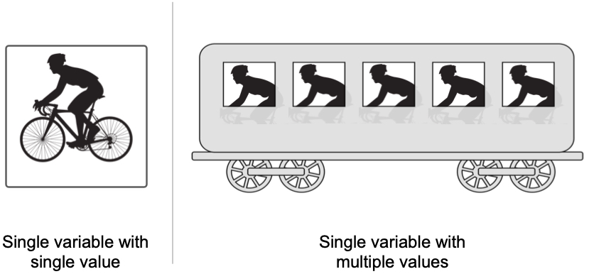

Single Variable Returns#
In Java, a method with a return type can return only one variable. The variable itself may represent a single value or multiple values. Arrays are good at representing multiple values as a single variable.
{kind=link}

New programmers are often tempted to return multiple values of same type using an array. For example, consider the following code that counts the lines, words, and characters of a file represented by a Scanner object.
1public static int[] countLinesWordsCharacters(Scanner fileScan) {
2 final int LINES = 0; // Array position with line counter
3 final int WORDS = 1; // Array position with word counter
4 final int CHARS = 2; // Array position with char counter
5 int[] counts = new int[3]; // Array with counts; to be returned
6 while (fileScan.hasNextLine()) { // Scan file, line by line
7 counts[LINES]++; // Update line count
8 String line = fileScan.nextLine(); // Bring line to a string
9 String[] words = line.split(" "); // Break line into words
10 counts[WORDS] += words.length; // Update word count with words in this line
11 for (String word : words) { // Go over each word in this line
12 counts[CHARS] += word.length(); // Update character count with length of this string
13 }
14 } // Done scanning the file
15 return counts;
16} // Inline comments not recommended; used here to keep code compact
What if we wanted the method above to return the average value of words per line? We can increase the array size to 4 elements from 3, and then try to store the new information. An average value would neet to be a double:
double wordsPerLine = (double) counts[WORDS] / (double) counts[LINES];
The only way to fit a double value into an integer array is to cast it as (int). But we may lose precision. For example an average of 6.785 words per line will become 6 words per line.
Arrays may be useful vehicles to return multiple values, but not always. Even in the case when the values are of the same time, we need to be careful when using arrays. In the example above, we must communicate to users the order in which the values appear in the array. For various reasons, this is not a good idea.
And if arrays are not a good idea to return multiple values through a single variable, what else can we do? We can design a “container” of our own, to hold the multiple values. Such container has a special name: object.
In Java, an object is a class that comprises non-static variables and non-static methods. An object class may also have static parts, but that’s a different topic. For now, let’s focus on a very simple object that contains four very useful variables for our file counting needs.
1public class FileCounts {
2 int numberOfLines;
3 int numberOfWords;
4 int numberOfCharacters;
5 double wordsPerLine;
6}
With this object of our own creation, we can rewrite the method that scans a file and returns multiple numeric values about it. These multiple values will be assigned to the variables of the object. And the method will return one variable: a FileCounts object.
1public static FileCounts countLinesWordsCharacters(Scanner fileScan) {
2 FileCounts counts = new FileCounts(); // Object with counts; to be returned
3 while (fileScan.hasNextLine()) { // Scan file, line by line
4 counts.numberOfLines++; // Update object's line count
5 String line = fileScan.nextLine(); // Bring line to a string
6 String[] words = line.split(" "); // Break line into words
7 counts.numberOfWords += words.length; // Update object's word count
8 for (String word : words) { // Go over each word in this line
9 counts.numberOfLines += word.length(); // Update object's character count
10 }
11 // Compute average words per line and assign it to the dedicated object variable
12 counts.wordsPerLine = (double) counts.numberOfWords / (double) counts.numberOfLines;
13 } // Done scanning the file
14 return counts;
15} // Inline comments not recommended; used here to keep code compact
If we attempt to print the variable returned by method countLinesWordsCharacters, we will be disappointed. All we’ll get is something like FileCounts@133314b. The printout includes the class name of the object and its memory location (in this example 133314b). Obviously we need something more useful. And so we have to modify the FileCounts object and provide it with instructions how to represent itself as a string.
1public class FileCounts {
2 int numberOfLines;
3 int numberOfWords;
4 int numberOfCharacters;
5 double wordsPerLine;
6
7 public String toString() {
8 return String.format("%d lines, %d words, %d characters, %.2f words per line.",
9 numberOfLines, numberOfWords, numberOfCharacters,
10 wordsPerLine);
11 }
12}
The addition of method toString() provides the object FileCounts with a way to behave as String when needed - for example, when called from a print statement. To be clear: the object behaved as a String before, when called to be printed. Its behavior, however, was not very useful because all it gave us was something like FileCounts@133314b. With the addition of the toString() method, we determine a more useful way to behave as a string.